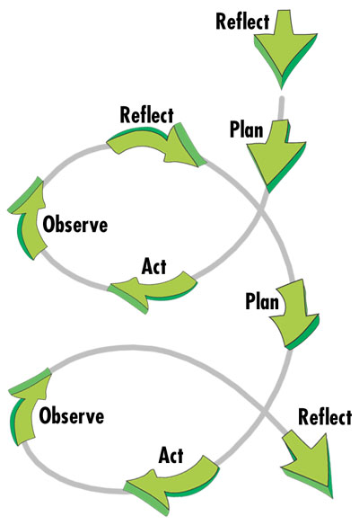

Search the Case Studies
Search the Articles
Search the Membership
Search MirandaNet
MirandaNet Fellowship Casestudy
Membership List | Publications | Research | Specialist Area List | Braided Learning Ejournal
Modern Foreign Languages Elearning Project:
How can ICT be used to set meaningful and motivating homework in MFL? Investigating pupils' response to an online language forum
Karen Hanrahan
Year of posting: 2004
Abstract:
Context: The project I have been working on involves two groups of Year 7 students (a French class of 29 students and a German class of 28) within a large 11-18 comprehensive school in East Sussex.
Aims: The idea for this project germinated from two distinct and (fairly common!) difficulties I have encountered, namely access to the IT suites in school and the setting of meaningful yet interesting homework. Therefore, my project’s aims were to investigate the viability of students’ use of ICT for Modern Foreign Languages at home (including their response to their own private forum) and whether this had any impact on their attitude to language learning. In addition, I proposed to examine my own e-learning throughout the project.
Project Outline: The homework tasks included going onto different language websites to complete various activities, writing reviews and reports of chosen language sites and games which students would then email to me, and participating in a language forum that was set up specifically for the project on the MirandaNet site. Other questions I intended to consider include: How effectively can online homework be monitored? What effect, if any, does this e-learning project have on students’ attitude to language learning? How successful was the Year 7 discussion forum and how does it differ from an adult forum?
Expected outcomes/findings: I hypothesized that students would find this new way of approaching MFL homework both useful and fun. In addition, I hoped that exposure to these language sites and the educational games and activities on them, as well as to our private forum, would encourage student autonomy by motivating students to access the sites again in their own time. A further supposition was that the project would help instill in the students a more positive attitude towards language-learning.
For my part I expected that the project would help me reflect on the processes of practice and planning as well as exploring new ways of communicating with my students. In acting as an efacilitator on the forum I would enable students to experiment with new ways of communicating with each other online.
Data collection and analysis: I intended to use a variety of methods to collect and evaluate data, such as an analysis of posts to the language forum, observations, questionnaires, a log of the project, interviews with students.
Study
(This link shows an example of a thread from our private online langauges forum)
AIMS AND INTRODUCTION
“I found it really fun because I was learning and playing games at the same time, which makes it a more interesting and fun way to learn.” (Laura, Year 7 French)
My primary aim in undertaking this research project was to investigate how ICT can be used as an effective, meaningful and motivating homework tool in Modern Foreign Languages. Over the past decade ICT has revolutionized teaching and learning in secondary schools. However, much of the focus has been on improving students’ IT literacy within specific IT lessons or through cross-curricular projects in school.
According to Becta, “ICT has the potential to make a significant contribution to the teaching of MFL by: developing and improving all four language skills; enhancing pupils' language learning skills; helping to develop independent learning skills; providing different levels of support to match different pupils' language learning skills; communicating with people in the target language; accessing a range of resources in the target language and identifying with the people of target language communities and countries; providing a flexible and time-saving resource; allowing teachers to respond to different stages in a pupil's writing”
(http://www.becta.org.uk/corporate/corporate.cfm?section=1&id=2111)
My objective in undertaking the GTC Action Research project was to examine students’ elearning in my subject area from a slightly different perspective, namely by exploring MFL homework as an online, more autonomous, student-led learning experience.
This choice of topic was prompted essentially by two factors, the first one being the constant challenge to create meaningful homework with limited resources; in my school students are not permitted to take textbooks home and teachers are allocated a quota of one hundred photocopies per month. The lack of scope in using the IT facilities in school, for my subject area at least, constitutes the second reason for seeking an alternative way that students could get involved online in MFL.
I also wanted to consider whether the use of ICT in this way could promote a more positive attitude towards language learning.
A significant part of the implementation stage was the creation of an online private language forum for the students involved in the project. This was designed as a space where they could share their experiences and knowledge, seek solutions to any problems encountered as well as being the area where they posted their homework. Students’ response to this online forum was a further element I wished to analyse in undertaking the Action Research project.
THEORETICAL FRAMEWORK
The framework upon which my project was based is the Action Research model. While many variations on the model exist (see for example Hopkins (2002) for an exposition of different models), the theory underpinning them and their typically cyclical nature are features common to most.
|  |
(source: Ideas!)
- Reflect -
· I’m having difficulty getting access to the IT suites in school during language lessons. How can I increase students’ exposure to MFL through the use of ICT?
· How can I set homework that is interesting when students cannot take textbooks home and my photocopying budget is limited to 100 copies per month?
- Plan - Explore possibility of setting ICT tasks for homework with Year 7 French and German groups. Assess how many would not have access to a computer at home and explore alternative possibilities (use PCs in library at break or lunch, buddy up with friend who has internet access, arrange for students to use my laptop at convenient time). Work within timeline of 6 weeks.
First phase: students go online, complete very specific activities on one of designated language sites and then email homework to me. I (try to) act as trouble-shooter for any technical / language problems which students encounter. Ascertain student interest in language forum (3 weeks).
Second phase: Launch language forum. Introduce students to it during an IT lesson, explain how to use it and establish code of conduct. Homework tasks now to become more open-ended and are to be posted to the forum, not emailed to me. Students try to help each other with problems. I act as moderator for the forum (2-3 weeks).
Conclusion of project: Allow one week for online questionnaire, student commentaries and review.
- Act – Implementation of above plan; this is detailed in the section below. The websites that we used for the purposes of the project are also listed in this section. The address of our Modern Foreign Languages online forum is:
· http://www.mirandanet.ac.uk/phorum/list.php?f=12
For security reasons this was a private forum and therefore can only be accessed with a valid username and password (however, an example is given below).
- Observe - I planned to collect and analyse several forms of data to ensure validity of research findings (see section below and also section on Research Findings and Evaluation)
RESEARCH METHODOLOGY AND IMPLEMENTATION
I used several means of data collection and evaluation:
- Analysis of the pupils’ electronic portfolio (i.e. using the forum and also the emails that students sent me as a barometer of pupil engagement and enthusiasm as well as an indicator of the volume of activity of each pupil online)
- Field notes (keeping a log of the project’s progress and my on-going observations)
- Questionnaires on e-learning project (to be completed online at the end of the project)
- Collecting pupil commentaries to identify their overall perspective on the e-learning project and, most importantly, to cross-reference and check their consistency with the answers supplied on the questionnaires (these to be completed online during lesson time).
By using these diverse methods of gathering evidence I expected to establish validity of the findings.
Implementation strategies:
The actual project ran for 6 weeks in total and was implemented with two Year 7 classes (one French group of 29 students and one German group of 28 students). The language sites we worked on for homework were
- Channel 4’s Chez mimi:
http://www.ltscotland.org.uk/5to14/c4modernlanguages/mimi/main/french_main_menu.asp
- Hennings Haus:
http://www.ltscotland.org.uk/5to14/c4modernlanguages/henning/main/german_main_menu.asp
- Educationcity:
I subscribed to a free trial on this website for the duration of the project.
- Also www.quia.com
- And www.bonjour.org.uk
- And its German counterpart www.hallo.org.uk (these have since become websites that one must subscribe to www.linguascope.com).
“ I revised how to say all the words in German and English at home so I could beet (sic) my score in the games and get quicker times and I didn’t have to keep looking in my book” (Gemma, Year 7 German)
Phase 1: Prior to commencing the project I set up an email address which was dedicated specifically to the project. Pupils were instructed to send their homework and any problems they encountered to this address.
Initially, the homework tasks set were of a very specific nature and I gave very detailed information about each link e.g. pupils were told to go onto a certain website and complete certain games and/or activities and then to email the answers to me.
I was struck by the ease with which the vast majority of pupils seemed to engage with the technology. Moreover, I had anticipated a greater degree of difficulty with regard to internet access than was actually the case. Of the five students (out of 59) who I had to chase up for homework, four were often late in producing homework and needed much prompting, which led me to question whether their lack of homework was entirely due to gaining online access.
One technical problem which we did encounter at the start was with the Educationcity website; I had subscribed to a free trial on this site and therefore students needed a username and password to access the games and activities. I gave these out in a lesson but a number of students either misplaced their sheet or did not know where to enter the details on the website (it was not self-evident). Several of the emails I received related to these difficulties but once I replied to the individuals in question they managed to login and succeeded in doing the homework. The next lesson I demonstrated how to do it using my laptop in the classroom for those who were still not sure.
I found that monitoring homework was not a problem as it was easy to keep track of emails received but I was more lenient in giving extensions for completing homework as I felt that some students had genuine excuses (such as their internet connection temporarily not working etc.).
As students gained in confidence and competence the homework tasks became more open-ended e.g. they were given a choice of activity or website and then had to email me a review of a certain game or language site and two new words in the target language which they had learnt.
The emails served a dual function in that they allowed me to monitor and assess pupil homework and learning as well as providing valuable data for my research.
“The phorum was great. You could talk to people in German without having to pronounce it right. I found it different because you don’t have people staring at you and putting you off” (Nia, Year 7 German).
Phase 2: The next phase of the project involved the launching of the online languages forum.
This was hosted by MirandaNet and I am grateful to MirandaNet’s editor Francis Howlett who kept a watchful eye over proceedings. The forum was designed to extend online dialogue beyond that of teacher and student so that pupils could communicate online not only with those in their class but also with students in the other language group. My role was one of moderator. The positive response to the forum was beyond what I could have hoped for: there were 235 posts in all (not including those which had, for various reasons, been deleted) and the excitement and enthusiasm that it generated is, in my opinion, immeasurable.
We did an initial lesson in the IT room to introduce pupils to the forum (of the 50 respondents in the questionnaire only 8 had previously been on a forum). Pupils were given definite guidelines regarding netiquette and relevance of posts. From this point students were no longer to email me but rather to post their messages and homework on the forum. Moreover, students were encouraged to try to help each other with any problems encountered.
RESEARCH FINDINGS AND EVALUATION
A) Out of a total of 57 participants in the project I succeeded in obtaining a completed questionnaire from 50 of these students (the remaining students were either out on a school trip, on holiday or absent due to illness). The elearning questionnaire was to be filled in during lesson time.
My initial intention was that it should be completed online and almost two-thirds of students succeeded in doing this. However, the remaining students could not access the shared curriculum area on the school network where the questionnaire was located and therefore had to resort to filling it in manually. There were ten questions in total, nine of which involved a multiple choice style answer.
|
||
|
All of it |
Some of it |
None of it |
|
33 |
17 |
|
|
||
|
Very much |
A little |
Not very much |
|
20 |
28 |
2 |
|
||
|
Yes, definitely |
A little bit |
Not really |
|
43 |
6 |
1 |
|
||
Yes I would |
Maybe |
No way |
|
10 |
29 |
11 |
|
||
|
Easy |
I had some problems |
It didn’t work for me |
|
18 |
30 |
2 |
|
||
|
Yes |
No |
|
|
8 |
42 |
|
|
||
|
A lot |
A little |
Not at all |
|
4 |
35 |
11 |
|
||
|
Wicked |
Quite good |
Stupid |
|
15 |
30 |
5 |
|
||
|
Just about right |
Too easy |
Too hard |
|
42 |
7 |
1 |
|
||
|
|
|
|
Critique
As a newcomer to the world of efacilitation, on commencing this course I found myself clinging to Preece’s Online Communities: Designing usability, Supporting Sociability, hoping that it would shed some light on what was going on. And it did. I found that the text gives a very comprehensive account of online learning communities yet in an accessible, user-friendly style. When it came to running my own forum for the case study I found myself returning to it as it draws together very well the different theories and discussions regarding human behaviour online.
Salmon’s E-tivities was another important font of knowledge for me, and from what I can gather, for other colleagues also. Her five-stage framework has been heavily referred to throughout the course, initially almost forming the backbone before it was repositioned in the second part of the course as we considered other theories and models of e-learning. The book’s hands-on approach was attractive, offering an abundance of practical ideas. While I did find many of her ideas engaging I think a certain number are more geared to an older audience and would be difficult to implement in a secondary school context. However, it was extremely useful for our GTC efacilitation work and I found myself dipping into it throughout the course. In particular part II, the resources for practitioners, was densely packed with workable ideas.
Still on the subject of online communities in particular, I thought that Paccagnella’s article (1997) discussing strategies for exploring ethnographic research for virtual communities made for compelling reading and throws up pertinent issues regarding the complexities involved in analyzing the online world.
In general, I found it quite difficult to find relevant articles in my subject area to help inform my thinking. One very interesting article I did come across was by Warschauer and Healey (1998). This is an excellent study of the evolution of CALL, where we are now and where we are heading in the future. They assert that in the networked society most ‘real’ writing will take place on screen and in response to this second language teachers will need to teach students effective online writing skills. The web should no longer be viewed merely as a distribution vehicle but rather as a medium in its own right: “Students will want to learn how to publish Web pages that are fitting for the multimedia environment. We will thus need to find ways to teach our students to combine a variety of media--texts, images, sounds, video--without diluting the attention we give to language”. This then begs the question as to whether the MFL curriculum is addressing these needs and how we can better integrate technology into the language learning process in schools.
In carrying out the Action Research I would like to cite several sources which helped focus my thinking in designing and modifying my project but also which influenced my perception of the whole AR philosophy. Firstly, David Nunan’s ar
[You can download this casestudy]
MirandaNet Members can go to the Log on/off area to edit their own casestudies.
[Back]